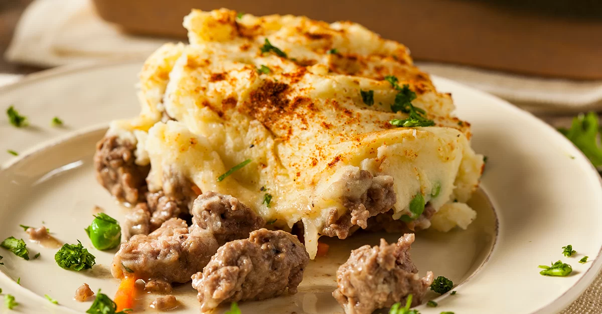

Chilean Potato Pie

Pastel de papas (Potato pie) is like a spicy version of shepherd's pie with the addition of Chilean cheese.
It's hearty and comforting.
Ingredients:
- 5 cups potatoes, peeled and cubed
- 2 tablespoons butter, or to taste
- 2 large eggs, beaten
- ½ cup vegetable oil
- 1 medium onion, diced
- 1 clove garlic, minced
- 2 medium tomatoes, diced
- 1 tablespoon tomato paste
- 1 pound ground beef
- 2 tablespoons shredded cheese
- ½ teaspoon chopped fresh parsley
- 2 medium tomatoes, diced
- salt and black pepper to taste
Steps:
- Place potatoes into a large pot and cover with salted water; bring to a boil. Reduce the heat to
medium-low and simmer until tender, about 20 minutes..
- While the potatoes are cooking, heat oil in a large skillet over medium heat. Add onion; cook and
stir until translucent, about 5 minutes, adding garlic for the last minute. Stir in diced tomatoes
and tomato paste; cook until tomatoes soften and begin to lose their shape, 3 to 5 minutes.
- PAdd ground beef to the skillet; cook and stir until browned and crumbly, about 10 minutes. Stir in
the cheese, parsley, and cayenne pepper; season with salt and pepper. Turn off the heat and let sit u
ntil needed.
- Preheat the oven to 350 degrees F (175 degrees C). Grease a 2-quart baking dish.
- Drain potatoes in a colander, then allow to steam dry for 1 to 2 minutes. Transfer potatoes back to
the pot, add butter and salt, and mash until smooth. Let cool until just warm, 5 to 10 minutes, then
stir in beaten egg.
- Spread ½ of the mashed potatoes over the bottom of the prepared baking dish. Layer ground beef mixture
over top, then completely cover with remaining potatoes.
- Bake in the preheated oven until potatoes are hot and lightly browned on top, about 40 minutes.
Back to homepage